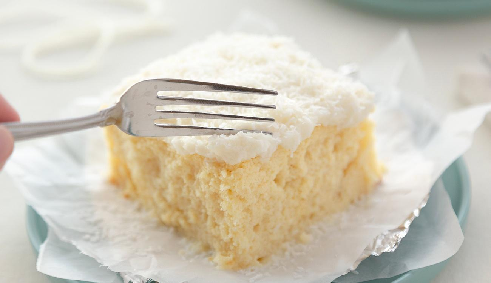
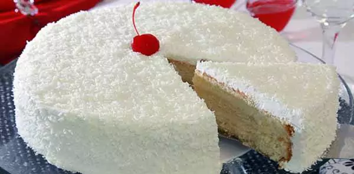
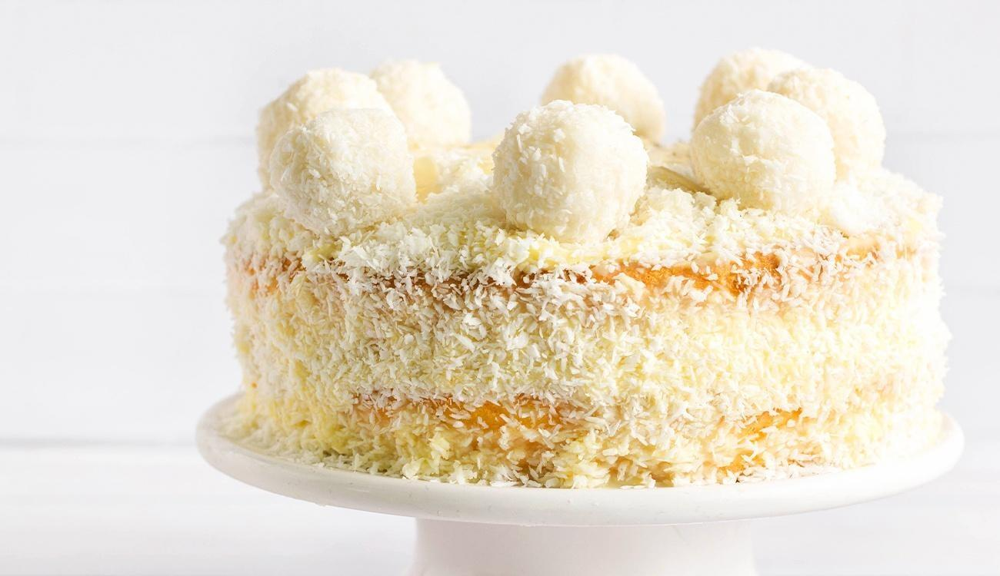

Vou ensinar uma receita simples de bolo de coco
você coloca 3 ovos
2 xícaras de açúcar
2 xícaras de farinha de trigo
2 colheres (sopa de margarina)
1 xícara de leite
1 colher de fermento em pó
Para molhar o bolo:
1 lata de leite condensado
1 vidro de leite de coco
A mesma medida da lata de leite condensado
1 pacote de 100g de coco para polvilhar
Modo de preparo:
Passo 1: Bata na batedeira o açúcar com a margarina, acrescente as gemas peneiradas uma a uma e continue batendo até que se obtenha um creme claro e fofo.
Passo 2: Em seguida adicione o leite, acrescente a farinha e o fermento peneirados, desligue a batedeira e por último despeje delicadamente as claras.
Passo 3: Leve para assar em forma untada em forno pré aquecido por aproximadamente 35 minutos.
Passo 4: Para cobrir o bolo bata os ingredientes no liquidificador e jogue em cima do bolo ainda quente.
Passo 5: Polvilhe o coco e leve para gelar por aproximadamente 2 horas.
O bolo pode ser decorada com sua preferência, como frutas frescas por cima ou até mesmo fazer camadas de bolo com creme de coco. A sua massa é fofa e úmida, para finalizar é coberto com coco ralado e uma calda de açúcar adicionando com muito mais sabor. O bolo de coco gelado é uma ótima opção para quem adora o sabor do coco com uma receita deliciosa.